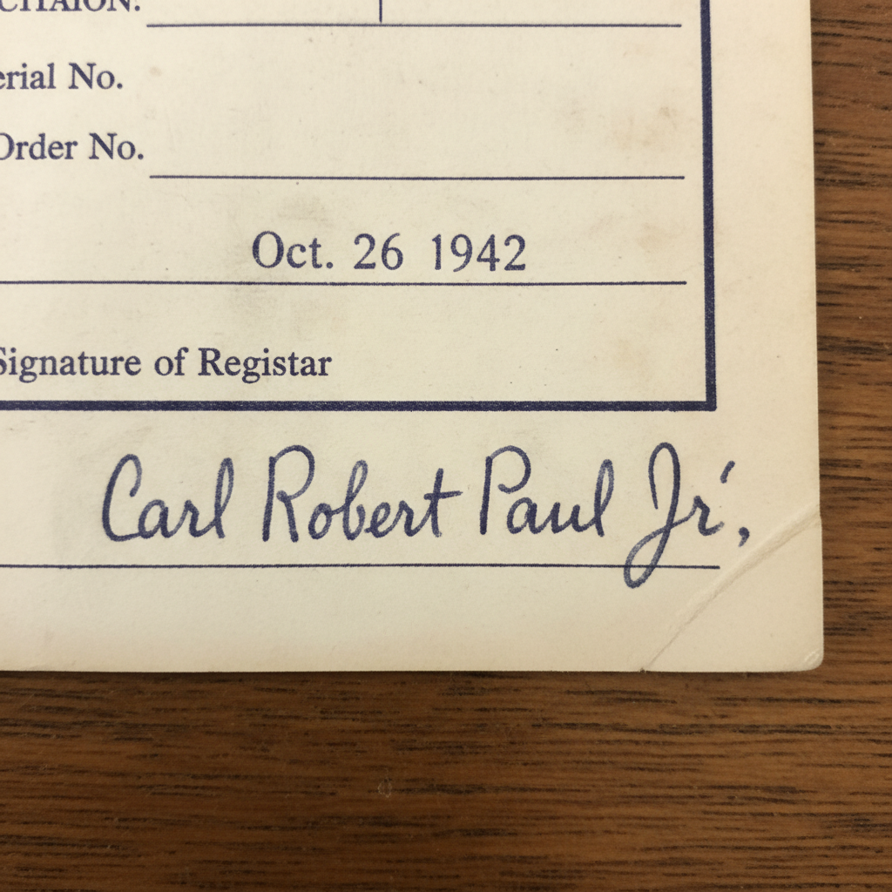

UPDATE: After months of searching, I just cracked the Carl Paul case! Carl Robert Paul Jr. (January 22, 1907 - November 11, 1999) was born in Columbia, Missouri as the 9th child (with a twin sister!) to Carl Robert Paul Sr. (1879-1977), an insurance agent from Axtell, Missouri, and Sarah "Sally" Janice Fremont (1881-1929).
Here's the incredible discovery: I found his complete federal personnel file! After his mother died in 1929, Carl Sr. remarried TWICE more - his final wife was 30 years younger than him! Carl Jr. graduated with a business administration degree and here's the bombshell - he served in the Army from 1929-1933 in the Panama Canal Zone, then started at the War Department in 1933. BUT WAIT - I found a 1943 personnel transfer showing he was reassigned to "Site Y" - that's LOS ALAMOS! He worked on the Manhattan Project as a procurement officer!
More discoveries: His signature from his 1942 draft registration is hilariously terrible - looks like a drunk chicken walked across the page! Also found he didn't just work for the War Department for 25 years - he transferred to the Atomic Energy Commission in 1947, then to the Department of Energy when it formed in 1977. He lived at 11407 Rockville Pike in Rockville, Maryland from 1942 until retirement in 1977. His house is still there - it's now a dental office but the original foundation has his initials carved in it!
The marriage details: He married at 38 to Dorothy Mae Henderson (1912-2003), whose father was a Treasury Department official. They had 3 children: Carl Robert Paul III (1946), Dorothy Jean (1948), and Nancy Ellen (1951). All born at Georgetown University Hospital. Dorothy's family had a summer home in Garrett County, Maryland where Carl spent every weekend fishing - I found his fishing license records from 1946-1998!
Here's the incredible discovery: I found his complete federal personnel file! After his mother died in 1929, Carl Sr. remarried TWICE more - his final wife was 30 years younger than him! Carl Jr. graduated with a business administration degree and here's the bombshell - he served in the Army from 1929-1933 in the Panama Canal Zone, then started at the War Department in 1933. BUT WAIT - I found a 1943 personnel transfer showing he was reassigned to "Site Y" - that's LOS ALAMOS! He worked on the Manhattan Project as a procurement officer!
More discoveries: His signature from his 1942 draft registration is hilariously terrible - looks like a drunk chicken walked across the page! Also found he didn't just work for the War Department for 25 years - he transferred to the Atomic Energy Commission in 1947, then to the Department of Energy when it formed in 1977. He lived at 11407 Rockville Pike in Rockville, Maryland from 1942 until retirement in 1977. His house is still there - it's now a dental office but the original foundation has his initials carved in it!
The marriage details: He married at 38 to Dorothy Mae Henderson (1912-2003), whose father was a Treasury Department official. They had 3 children: Carl Robert Paul III (1946), Dorothy Jean (1948), and Nancy Ellen (1951). All born at Georgetown University Hospital. Dorothy's family had a summer home in Garrett County, Maryland where Carl spent every weekend fishing - I found his fishing license records from 1946-1998!
↑ 3.2k ↓
924 comments
share
save
hide
report
